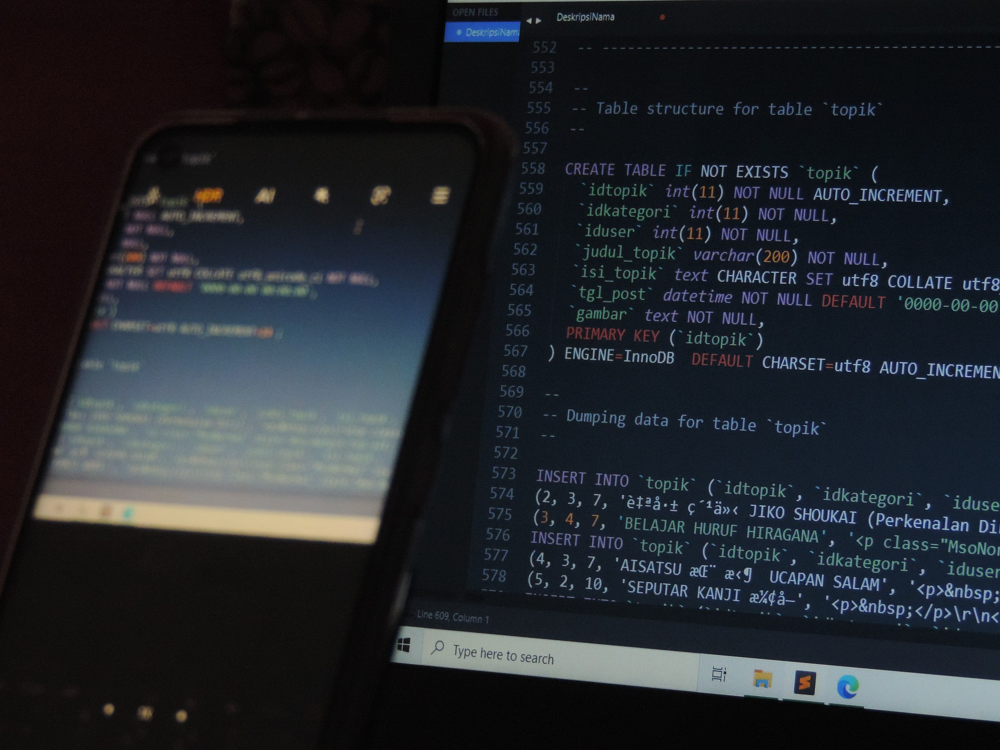

Thesseract
System&Tech
Moderniza tu presencia online.
Gestiona y centraliza tu información.
Toma decisiones estratégicas basadas en datos.
Transforma procesos manuales a digitales.
Coordina y mejora la productividad.
Software personalizado para tu negocio.
Libera tiempo y reduce errores.
Eficiencia con Lean y Agile.
Diseño Web y eCommerce
Moderniza tu Presencia Online
Transformamos tu negocio con diseño web profesional y sitios web modernos optimizados para la experiencia del usuario. Ofrecemos desarrollo web Fullstack utilizando la última tecnología, asegurando diseño responsivo y optimización SEO para mejorar la visibilidad en motores de búsqueda.
- Desarrollo Fullstack: Creamos soluciones con tecnologías avanzadas como HTML, CSS, JavaScript, y frameworks como React o Vue.js.
- Diseño Responsivo: Aseguramos que tu sitio se vea perfecto en cualquier dispositivo, desde móviles hasta escritorios.
- Optimización SEO: Mejoramos la visibilidad de tu sitio web para captar más clientes potenciales.
Integración de Bases de Datos
Gestiona y Centraliza tu Información
Ofrecemos integración de bases de datos robustas y escalables para centralizar toda tu información. Nos especializamos en desarrollo de bases de datos utilizando SQL Server, MySQL, y MongoDB, asegurando una gestión eficiente de datos empresariales con optimización de consultas y sistemas de backups y recuperación para proteger tu información.

- Desarrollo de Bases de Datos: Diseñamos e implementamos bases de datos con SQL Server, MySQL, y MongoDB.
- Optimización de Consultas: Mejoramos la eficiencia y velocidad de tus consultas de datos.
- Backups y Recuperación: Sistemas de respaldo y recuperación para asegurar la continuidad de tu negocio.
Análisis de Datos y KPIs
Mejora la Toma de Decisiones Estratégicas
Convierte tus datos en insights accionables con tableros de análisis, visualización de datos y reportes detallados. Utilizamos BI (Business Intelligence) para identificar KPIs clave, crear dashboards interactivos con Power BI y Tableau, y realizar análisis predictivo que te ayuden en la toma de decisiones estratégicas.

- Tableros de Análisis BI: Dashboards interactivos con Power BI y Tableau para visualizar datos.
- Identificación de KPIs: Definimos las métricas clave para medir el rendimiento del negocio.
- Visualización de Datos: Diseñamos gráficos claros y reportes fáciles de interpretar.
- Análisis Predictivo: Utilizamos datos históricos para anticipar tendencias y decisiones futuras.
Consultoría en Digitalización
Transforma Procesos Manuales a Digitales
Proveemos consultoría en digitalización para transformar los procesos manuales en digitales. Asesoramos en la implementación de software, automatización de documentación, y capacitamos a tu equipo en nuevas herramientas. Optimiza recursos y mejora la eficiencia con nuestras soluciones personalizadas.
- Mapeo de Procesos: Analizamos tus procesos actuales para identificar áreas de mejora y digitalización.
- Automatización de Documentación: Digitalizamos y optimizamos la gestión de documentos.
- Implementación de Software: Instalamos y configuramos soluciones digitales adaptadas a tus necesidades.
- Capacitación del Personal: Entrenamos a tu equipo para maximizar el uso de nuevas tecnologías.
Optimización del Flujo de Trabajo
Mejora la Coordinación y Productividad
Reorganizamos y optimizamos los flujos de trabajo de tu equipo para maximizar la eficiencia operativa y mejorar la productividad. Identificamos cuellos de botella y utilizamos metodologías Lean para reducir desperdicios y mejorar los procesos.
- Análisis de Cargas de Trabajo: Evaluamos la distribución del trabajo y proponemos mejoras.
- Automatización de Tareas: Reducimos tareas manuales utilizando scripts y herramientas específicas.
- Implementación de Metodologías Lean: Aplicamos principios Lean para agilizar los procesos.
Desarrollo de Sistemas de Gestión
Software Personalizado para tu Negocio
Desarrollamos sistemas de gestión personalizados que se ajustan a las necesidades específicas de tu empresa. Ofrecemos soluciones ERP y CRM para la gestión de clientes, recursos, y más, con interfaces amigables y soporte técnico continuo.
- Sistemas ERP y CRM: Soluciones integrales para la gestión eficiente de recursos y clientes.
- Interfaces Amigables: Diseñamos sistemas intuitivos y fáciles de usar.
- Integraciones Personalizadas: Conectamos tus sistemas con otras herramientas clave.
- Soporte y Mantenimiento: Proveemos soporte técnico para garantizar el rendimiento óptimo.
Automatización de Tareas
Libera Tiempo y Reduce Errores
Automatizamos tareas repetitivas mediante bots y scripts personalizados, conectando automatizaciones con Excel, Google Sheets, y otras herramientas. Esto permite a tu equipo enfocarse en actividades más valiosas, reduciendo errores y mejorando la eficiencia operativa.
- Automatización de Procesos: Implementamos soluciones automatizadas para tareas recurrentes.
- Integración con Herramientas de Oficina: Conectamos tus automatizaciones con Excel, Google Sheets, y más.
- Notificaciones y Alertas: Configuramos alertas automáticas para monitorear eventos clave.
- Flujos de Trabajo Automatizados: Simplificamos procesos utilizando herramientas adaptadas a tus necesidades.
Optimización de Procesos Productivos
Eficiencia con Lean y Agile
Implementamos mejoras continuas en tus procesos productivos utilizando metodologías Lean y Agile para maximizar la eficiencia y reducir costos. Aplicamos análisis de procesos y optimización de recursos para asegurar la calidad y efectividad de tu producción.
- Análisis de Procesos: Evaluamos y mejoramos la efectividad de tus procesos actuales.
- Metodologías Lean y Agile: Implementamos prácticas ágiles para reducir desperdicios.
- Optimización de Recursos: Gestionamos los recursos para asegurar su uso eficiente.
- Control de Calidad: Introducimos medidas para mantener altos estándares de calidad.